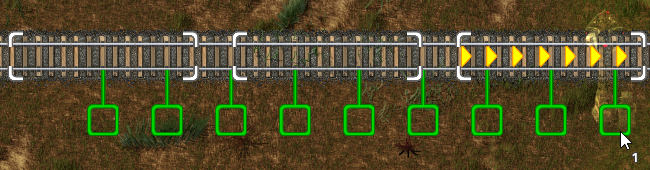
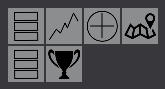
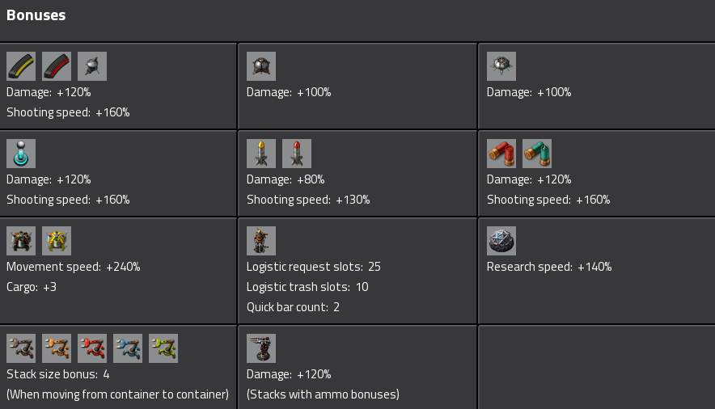
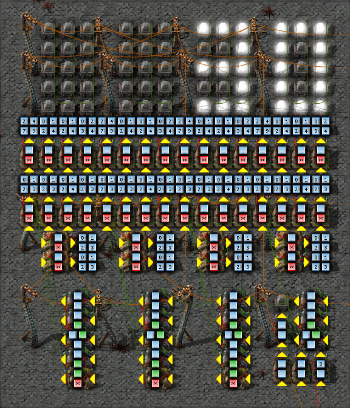
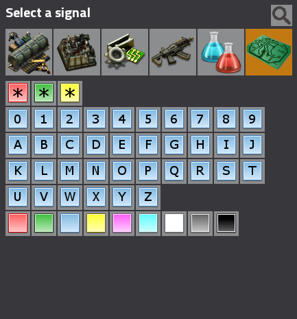
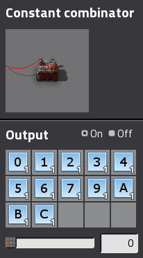

Brief description of the mod portal
For more information click here
Multiplayer Matching Server
In 0.13 we have the new multiplayer matching server and server browser. This will let you find games of people online join your friends and other stuff
Achievements
In 0.13 there is now a new achievement system. Achievements fall into some basic categories:
This
That
Other
More
Better Rail Building
Power Switch
Train Conditions
In-activity needs to be fixed to Inactivity
Train GUI
PLACEHOLDER PLZ FIX WITH NEW WAGONS AND BETTER BITRATE
Train station window
New train window will show what trains are scheduled to each stop
Single train Gui
Blueprint book
Modules in blueprints
Search in crafting menu
There is a new search feature in the crafting menu, which will search through all the recipes, even any mods, and will show only those which fit the search term.
You can access the search by click on the magnifyer icon or by pressing CONTROL + F.
Ease of use improvements
Rail signal placement indicator.
Indicator of train vehicle positions in a station when building next to track where would the train stop.

It is possible to change the module in the slot to different one without having to clear it first.
It is possible to upgrade modules to more powerful variant in machine by fast entity transfer.
Clear cursor first cancels the current action (rail building, wire dragging), and only removes the item from the cursor when pressed again.
Improved car handling: The car's rate of turn changes smoothly and steering is less sensitive at high speeds, making driving in a straight line easier.
Saving a game changes selected name and directory for next saves (https://forums.factorio.com/19461)
Clicking different filtered slot in quickbar will try to clear the currently selected quickbar item if possible.
Cleaning item in cursor that is taken from quickbar slot will try to refill the slot from the inventory if possible.
Clicking on the warning icon will open the location on the map.
Pressing E/Escape will close the map mode.
It is possible to move the map by dragging.
Fixed the zoom to cursor feature introduced in 0.8 that was non functional since 0.10.
Improved the rail selection logic in junctions.
Reduced number of connections drawn between roboports in blueprint and roboports on map.
Small features
Small sidebar gui containing buttons for main menu, production statistics, etc.
KILL ME

Bonus gui (accessible from sidebar gui) showing bonuses player has achieved.

Underground pipes and belts are placed at max connecting distance apart when built by dragging.
Combinators show some information in alt mode, including input and output arrows.
KILL ME

More virtual signals.
KILL ME

--scenario2map: Creates a save from a custom scenario, without initialising the graphics.
The constant combinator has an on/off switch.

The lamp can change it's color based on circuit network signals.
Roboport is connectable to the circuit network. It sends the logistic network contents.
Requester chest's requested items can be set automatically from the circuit network.
Wire disconnecting is incorporated in the latency hiding.
Intro sound in the loading screen.
Added yellow/black striped concrete tile that is rotatable.
Added landfill, it can be used to replace water areas by grass.
Added /ban /kick /bans /admins and /admin commands.
Added /color command, so changing color doesn't require access to lua commands.
Current colors are Blue, Red, Black, Gray, White, Pink, Orange, Yellow, Brown, Green and Purple
When running as a server, Factorio now accepts console commands on standard input
When running as a server, Factorio can be told to listen for RCON connections. To use this, specify both the --rcon-port and --rcon-password parameters on the command line. The network protocol is specified here: https://developer.valvesoftware.com/wiki/Source_RCON_Protocol
New parameter to start the headless server: --start-server-load-latest. Instead of accepting a save name, it will automatically load the latest save in the saves folder.
Balancing
The productivity module pollution addition was lowered (30%->5%, 40%->7.5%, 50%->10%), as the pollution generated by the machine is already increased by the additional energy production and time, it doesn't need to be so high as the modules are quite expensive already.
Repair packs have double durability (100->200) and stack size (50->100).
Changed stack size of wood (50->100) so it doesn't fill the inventory so quickly.
Roboport have decreased transmition power consumption (200kw->50kw) while the robots (and their recharting) has increased power consumption (200kW per recharge slot to 1Mw per slot). Basically, covering area by roboports is cheaper, but using robots for transport is more expensive. To keep the personal roboport usefulness, energies used in personal roboport have been
all multiplied by 10.
Increased size of several green science and few blue science technologies.